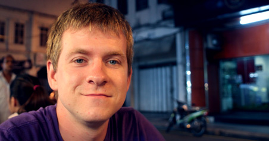

about me
|  |
The creation of digital worlds is what I love and the design of moving images is my passion. |
education |
|
03/2008 - now |
Leipzig University of Applied Sciences |
09/2011 – 12/2011 |
University of the Arts London |
work experience |
|
05/2011 – 08/2011 |
Fraunhofer Institute for Cell Therapy and Immunology IZI, Leipzig |
03/2010 – 08/2010 |
Cine Impuls Leipzig Fernsehproduktion GmbH |
09/2009 – 02/2010 |
Leipzig University of Applied Sciences |
06/2007 – 07/2007 |
Saxonia Media Filmproduktion GmbH, Leipzig |
11/2006 – 03/2007 |
Producciones A.M.I. Video S.A., San Jose, Costa Rica |
other activites |
|
10/2008 – 03/2010 |
floid, the academic television production of the |